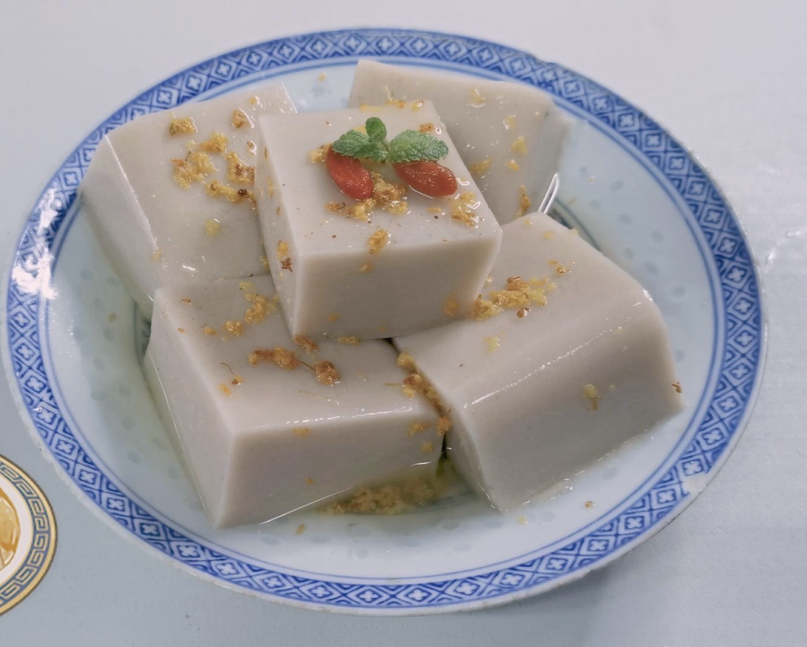

Almond Tofu

Description
A dessert made out of almond. It has a silky-smooth texture with a
long-lasting aroma of almond. It's named tofu only because of its
tofu-like shape.
Ingredients
- 1 Litre Almond Milk
- 12 g Agar Powder
Optional
- Osmanthus syrup to taste
- Gojiberries garnish
Steps
- Add in agar powder and heat for 5 minutes.
-
Pour almond pudding mixture into a container, straining through a mesh
strainer once more. Remove bubbles on the top using a spoon.
- Cool and refrigerate until it sets. (Several hours.)
- When serving, pair with fruits or osmanthus syrup.